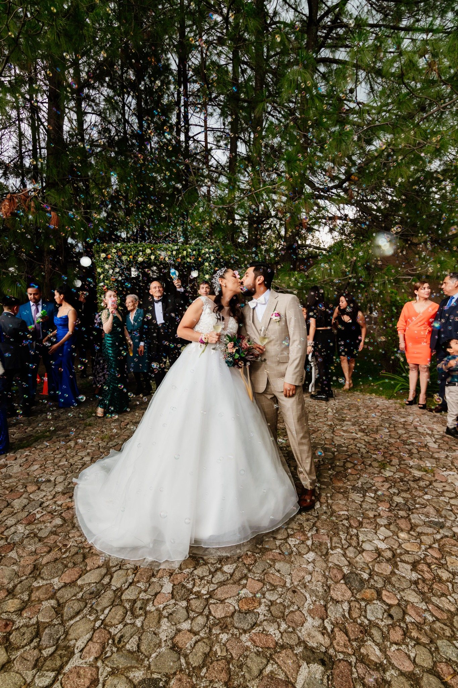
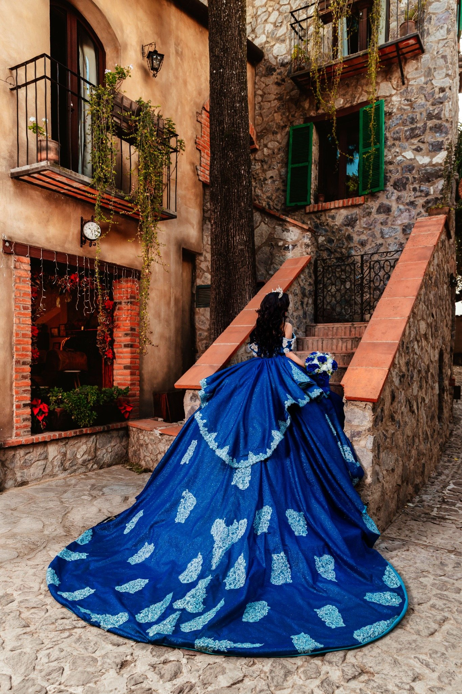
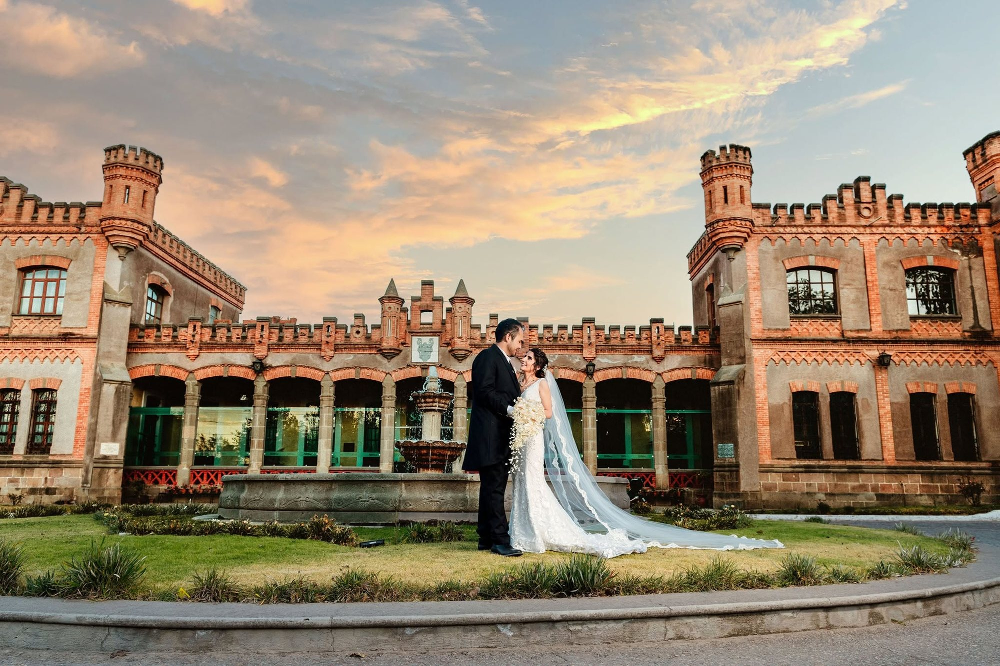
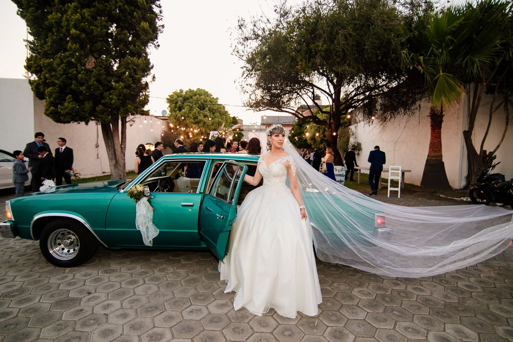

Historia destacada
Nancy & Alfredo
Boda · Hacienda Amalucan · PueblaUna boda elegante entre arquitectura clásica, momentos íntimos y una celebración llena de emoción.
Ver historia



Bodas · XV Años · Retratos Editoriales
Fotografía y video profesional con una mirada elegante, natural y cinematográfica.
Snapshot Fotografía
Historias que permanecen en la memoria de las familias durante generaciones.
Historias destacadas
Historia destacada
Una boda elegante entre arquitectura clásica, momentos íntimos y una celebración llena de emoción.
Ver historia
Historia destacada
Ceremonia solemne, retratos urbanos y una recepción elegante con una mirada profundamente romántica.
Ver historia
Historia destacada
Una celebración íntima con auto clásico, luces cálidas y momentos llenos de alegría.
Ver historia
Historia destacada
Una experiencia editorial de XV años con locaciones icónicas, vestidos de impacto y una recepción llena de espectáculo.
Ver historiaLa experiencia Snapshot
Desde la primera conversación hasta la entrega final, cuidamos cada detalle para que ustedes solo vivan el momento.
 01
01Escuchamos su historia y entendemos qué hace único su gran día.
 02
02Diseñamos el recorrido ideal para documentar cada momento importante.
 03
03Vivimos el día junto a ustedes con una cobertura discreta y emocional.
 04
04Una colección de recuerdos para revivir su historia toda la vida.
Portafolio editorial
Un recorrido visual por bodas, XV años, ceremonias, arquitectura y emociones reales.


Nuestra filosofía
Agenda tu fecha
Cada boda, cada XV años y cada familia empieza con una conversación.
Enviar WhatsApp